Continue the CRC on Mac
Pull Repo
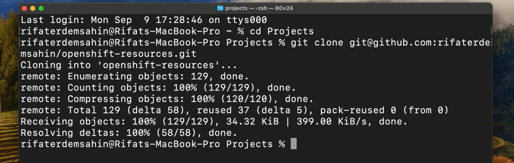
Crc Start
started and committed
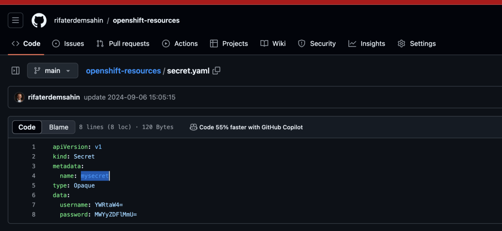
Else >?
You can add additional key-value pairs to the data field if needed, ensuring the values are base64 encoded. You might also consider adding annotations or labels for better management and organization of your secrets. Here’s an example:
apiVersion: v1
kind: Secret
metadata:
name: mysecret
labels:
app: myapp
annotations:
description: "Credentials for myapp"
type: Opaque
data:
username: YWRtaW4=
password: MWYyZDFlMmU=
api_key: YXBpa2V5MTIz
token: dG9rZW4yMzQ=
-
Labels help organize and select the secret across different applications or environments.
-
Annotations can provide more context or metadata for the secret.
-
Additional data like
api_keyandtokencan be added as needed, always base64 encoded.
Would you like help with base64 encoding other values, or any other configuration tips?
retrigger update
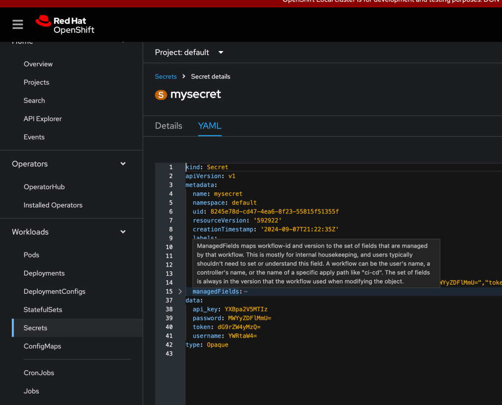
Key value pairs
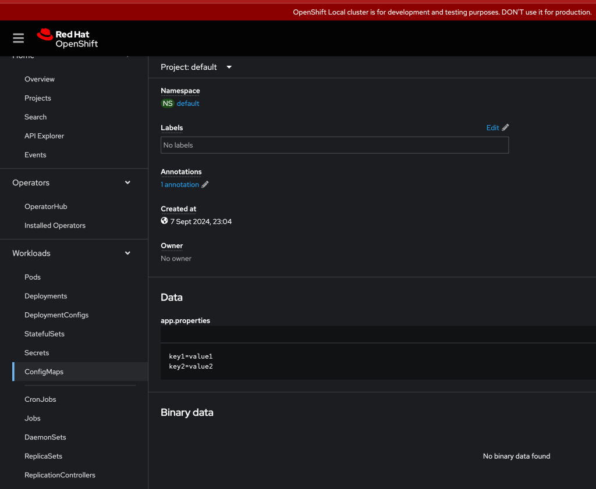
database
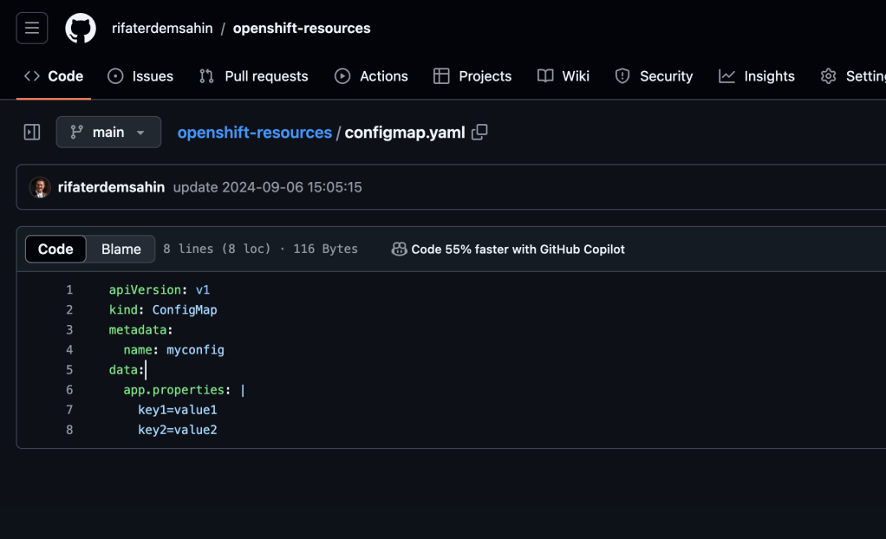
delete and recreate hpa
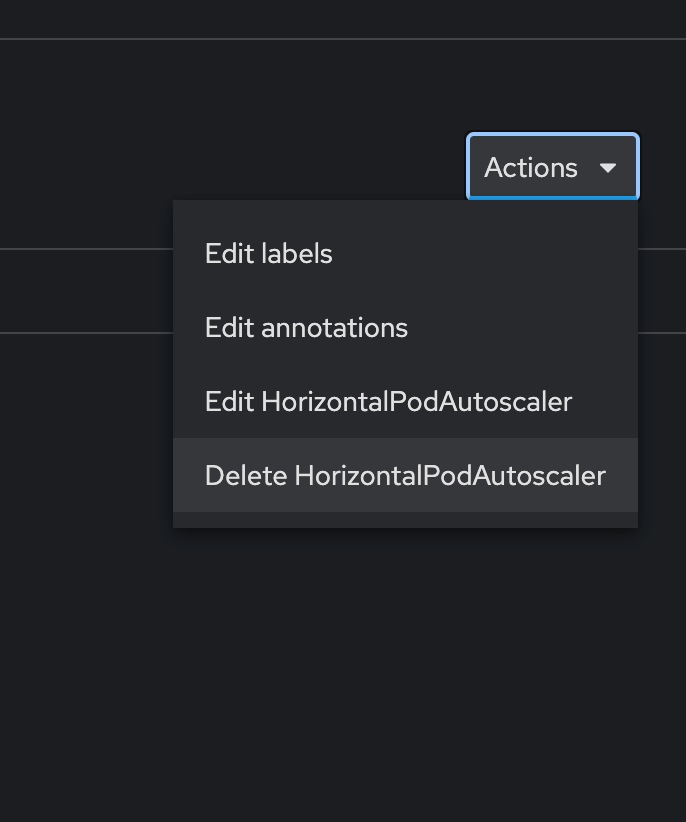
Replace
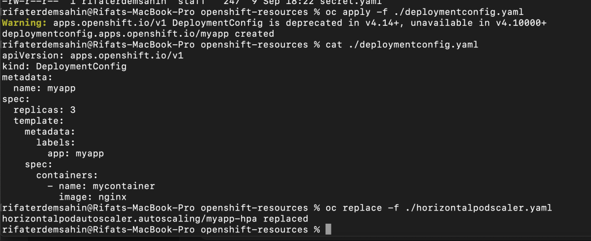
myapp not found
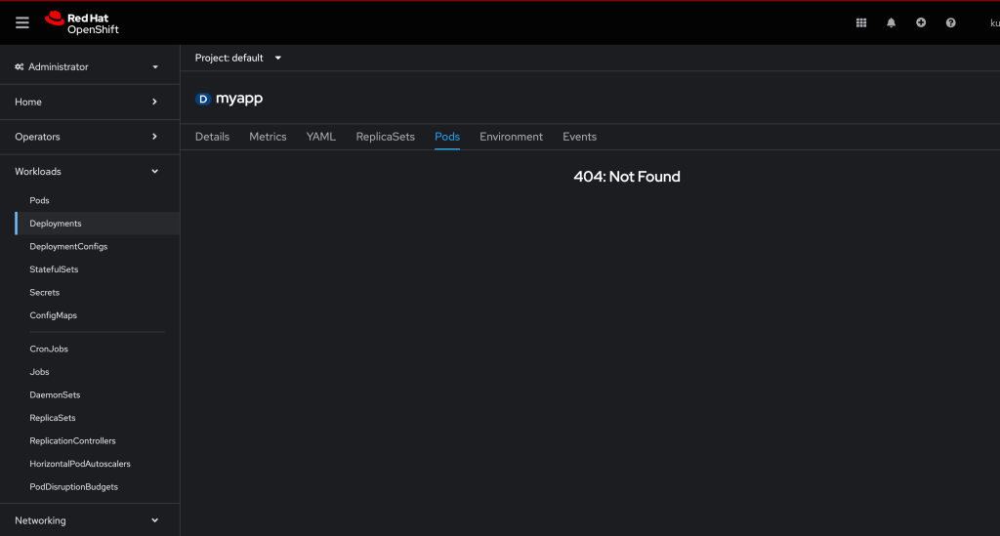
released the components
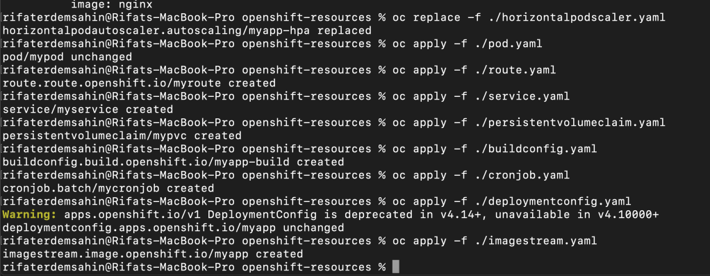
my app is not online
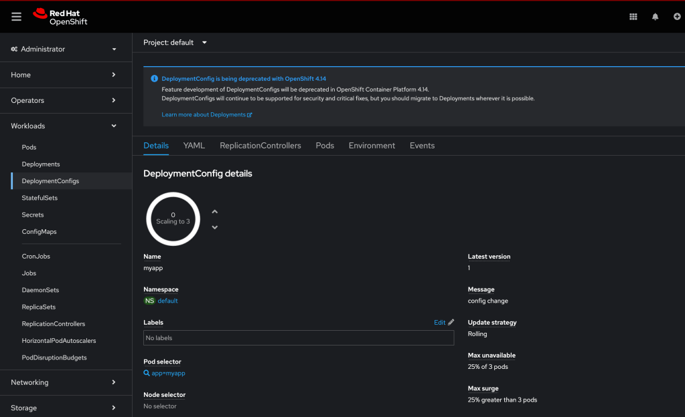
Ask and find the issue
Here's a DeploymentConfig for the given Pod configuration:
apiVersion: apps.openshift.io/v1
kind: DeploymentConfig
metadata:
name: mypod-deployment
namespace: default
spec:
replicas: 1
selector:
app: mypod
template:
metadata:
name: mypod
labels:
app: mypod
spec:
restartPolicy: Always
serviceAccountName: default
imagePullSecrets:
- name: default-dockercfg-6gjlj
containers:
- name: mycontainer
image: nginx
ports:
- containerPort: 80
protocol: TCP
resources: {}
volumeMounts:
- name: kube-api-access-gwpxj
readOnly: true
mountPath: /var/run/secrets/kubernetes.io/serviceaccount
terminationMessagePath: /dev/termination-log
terminationMessagePolicy: File
imagePullPolicy: Always
volumes:
- name: kube-api-access-gwpxj
projected:
sources:
- serviceAccountToken:
expirationSeconds: 3607
path: token
- configMap:
name: kube-root-ca.crt
items:
- key: ca.crt
path: ca.crt
- downwardAPI:
items:
- path: namespace
fieldRef:
apiVersion: v1
fieldPath: metadata.namespace
- configMap:
name: openshift-service-ca.crt
items:
- key: service-ca.crt
path: service-ca.crt
defaultMode: 420
dnsPolicy: ClusterFirst
tolerations:
- key: node.kubernetes.io/not-ready
operator: Exists
effect: NoExecute
tolerationSeconds: 300
- key: node.kubernetes.io/unreachable
operator: Exists
effect: NoExecute
tolerationSeconds: 300
strategy:
type: Rolling
triggers:
- type: ConfigChange
- type: ImageChange
imageChangeParams:
automatic: true
containerNames:
- mycontainer
from:
kind: ImageStreamTag
name: 'nginx:latest'
This DeploymentConfig mirrors your provided Pod setup and ensures that the Pod can be managed and scaled. It also incorporates rolling updates and auto-redeploys on configuration or image changes.
bulk apply
Here are the kubectl apply commands for each of the YAML files you listed:
kubectl apply -f LimitRange.yaml
kubectl apply -f NetworkPolicy.yaml
kubectl apply -f PodDisruptionBudget.yaml
kubectl apply -f ResourceQuota.yaml
kubectl apply -f buildconfig.yaml
kubectl apply -f clusterrole.yaml
kubectl apply -f clusterrolebinding.yaml
kubectl apply -f configmap.yaml
kubectl apply -f cronjob.yaml
kubectl apply -f daemonset.yaml
kubectl apply -f deploymentconfig.yaml
kubectl apply -f horizontalpodscaler.yaml
kubectl apply -f imagestream.yaml
kubectl apply -f ingress.yaml
kubectl apply -f job.yaml
kubectl apply -f persistentvolumeclaim.yaml
kubectl apply -f pod.yaml
kubectl apply -f role.yaml
kubectl apply -f rolebinding.yaml
kubectl apply -f route.yaml
kubectl apply -f service.yaml
kubectl apply -f serviceaccount.yaml
kubectl apply -f servicemonitor.yaml
kubectl apply -f statefulset.yaml
kubectl apply -f secret.yaml
This will apply each of the configurations to your Kubernetes cluster.
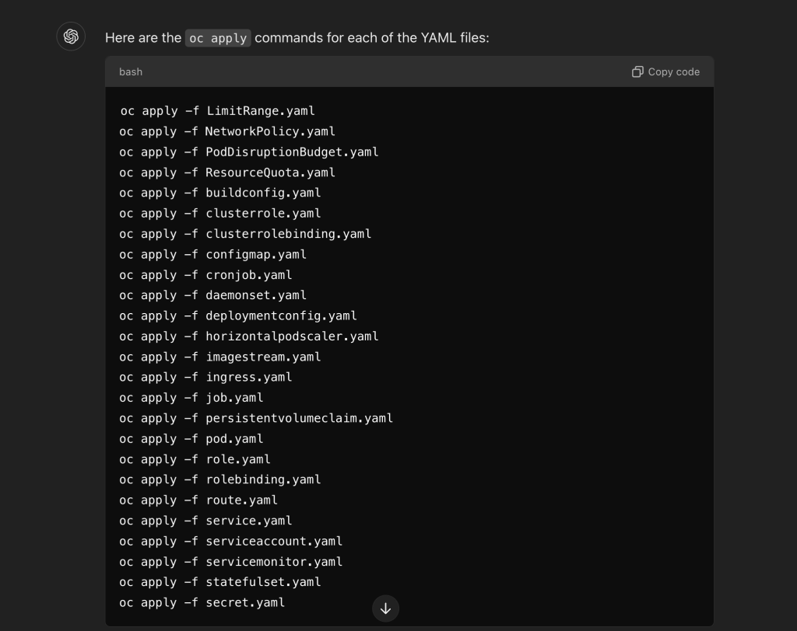
Ordered
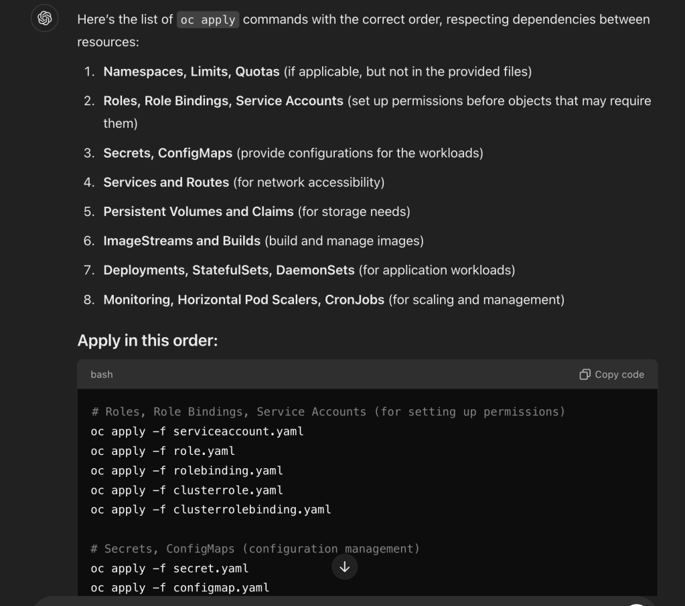
Here’s the list of oc apply commands with the correct order, respecting dependencies between resources:
-
Namespaces, Limits, Quotas (if applicable, but not in the provided files)
-
Roles, Role Bindings, Service Accounts (set up permissions before objects that may require them)
-
Secrets, ConfigMaps (provide configurations for the workloads)
-
Services and Routes (for network accessibility)
-
Persistent Volumes and Claims (for storage needs)
-
ImageStreams and Builds (build and manage images)
-
Deployments, StatefulSets, DaemonSets (for application workloads)
-
Monitoring, Horizontal Pod Scalers, CronJobs (for scaling and management)
Apply in this order:
Roles, Role Bindings, Service Accounts (for setting up permissions)
oc apply -f serviceaccount.yaml
oc apply -f role.yaml
oc apply -f rolebinding.yaml
oc apply -f clusterrole.yaml
oc apply -f clusterrolebinding.yaml
Secrets, ConfigMaps (configuration management)
oc apply -f secret.yaml
oc apply -f configmap.yaml
Services, Routes (for network exposure)
oc apply -f service.yaml
oc apply -f route.yaml
oc apply -f ingress.yaml
Persistent Volumes and Claims (storage)
oc apply -f persistentvolumeclaim.yaml
ImageStreams and Build Configs (build and image management)
oc apply -f imagestream.yaml
oc apply -f buildconfig.yaml
Deployments, StatefulSets, DaemonSets (workload management)
oc apply -f deploymentconfig.yaml
oc apply -f statefulset.yaml
oc apply -f daemonset.yaml
oc apply -f pod.yaml
Monitoring, Scaling, CronJobs (management of workloads)
oc apply -f horizontalpodscaler.yaml
oc apply -f cronjob.yaml
oc apply -f servicemonitor.yaml
Job (batch job workloads)
oc apply -f job.yaml
Policies and Resource Management
oc apply -f LimitRange.yaml
oc apply -f ResourceQuota.yaml
oc apply -f PodDisruptionBudget.yaml
oc apply -f NetworkPolicy.yaml
This sequence ensures that all dependencies are met as objects that rely on others are applied after their required components.
One liner
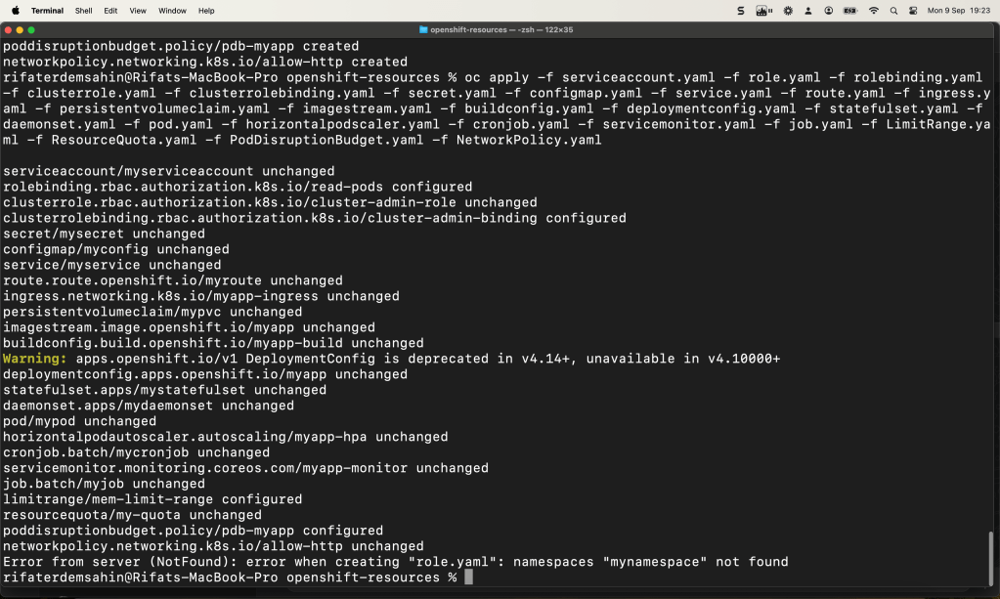
Cluster Update
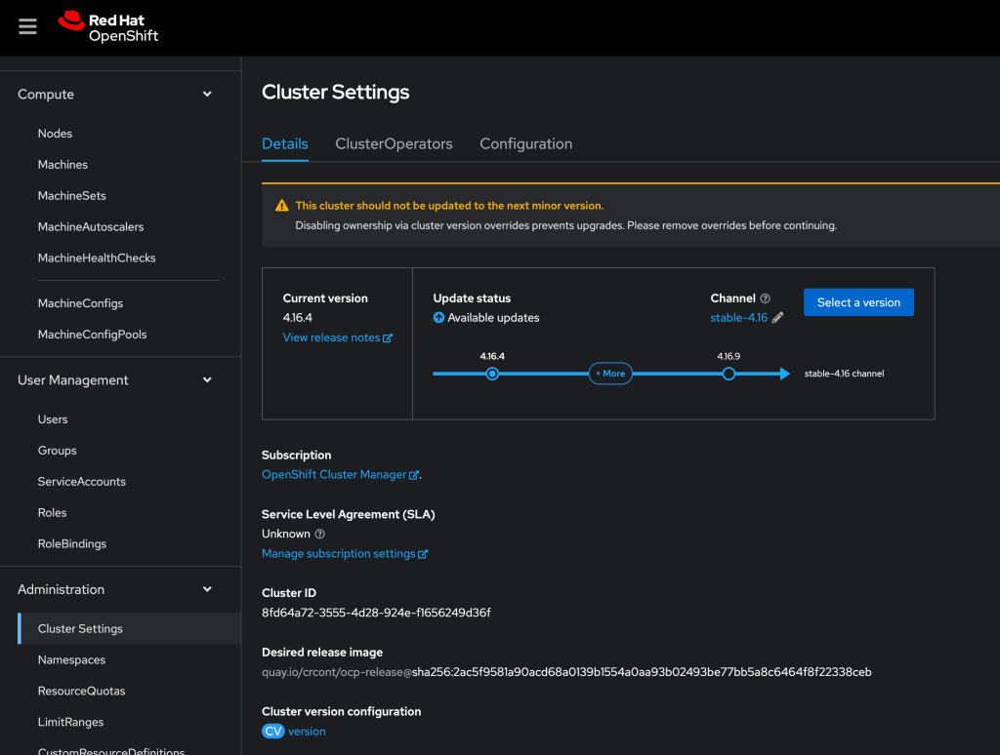
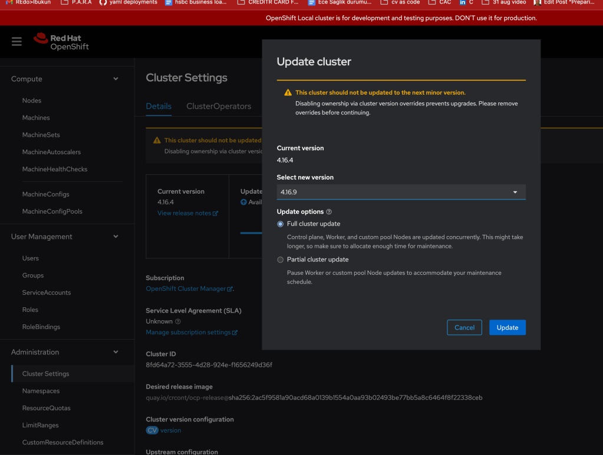
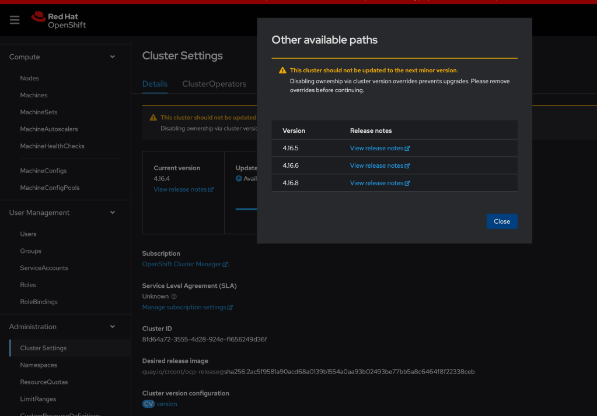
Here's a basic example of a Custom Resource Definition (CRD) YAML file for OpenShift or Kubernetes. This example defines a simple custom resource named MyCustomResource, which includes spec and status fields.
apiVersion: apiextensions.k8s.io/v1
kind: CustomResourceDefinition
metadata:
name: mycustomresources.example.com
spec:
group: example.com
versions:
- name: v1
served: true
storage: true
schema:
openAPIV3Schema:
type: object
properties:
spec:
type: object
properties:
foo:
type: string
replicas:
type: integer
status:
type: object
properties:
availableReplicas:
type: integer
scope: Namespaced
names:
plural: mycustomresources
singular: mycustomresource
kind: MyCustomResource
shortNames:
- mcr
Breakdown of the YAML:
-
apiVersion: Specifies the version of the CRD API used (
apiextensions.k8s.io/v1). -
kind: Identifies the object as a
CustomResourceDefinition. -
metadata: Contains information about the object like the CRD's name (
mycustomresources.example.com). -
spec:
-
group: The API group for the resource (
example.com). -
versions: Defines versions of the custom resource. This example has version
v1. -
schema: Defines the schema for the resource's
specandstatus. -
scope: Specifies whether the resource is
NamespacedorClusterscoped. -
names: Defines the plural and singular forms, the kind, and short names for the custom resource.
This YAML file can be used as a template for creating your own CRDs in OpenShift or Kubernetes. Make sure to customize the schema based on your needs.
🔗 Connect with me:
-
💼 LinkedIn: https://www.linkedin.com/in/rifaterdemsahin/
-
🐦 Twitter: https://x.com/rifaterdemsahin
-
🎥 YouTube: https://www.youtube.com/@RifatErdemSahin
-
💻 GitHub: https://github.com/rifaterdemsahin
Imported from rifaterdemsahin.com · 2024